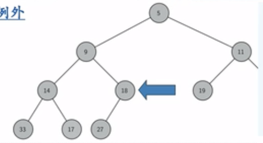

树及算法
Tree & Tree’s Algorithm
排序、递归
1. 总结
本章介绍了“树”数据结构，我们讨论了如下算法
- 用于表达式解析和求值的二叉树
- 通过构建哈夫曼树对字符进行编码
- 用二叉堆实现了优先队列
and：
- 用于实现 ADT Map 的二叉搜索树 BST 树
- 改进了性能，用于实现 ADT Map 的平衡二叉搜索树 AVL 树
- 二叉树 与 森林 及 树 之间的互相转换
2. Getting Started
树的组成：跟自然界中的树一样，数据结构树也分为==根、枝、叶==等三个部分
但在图示中，习惯把树画成倒的——根放在上方，叶放在下方。
3. 术语与定义
节点 Node，边 Edge
| 术语 | 定义 |
|---|---|
| 根 Root | 树中唯一一个没有入边的节点 |
| 路径 Path | 由边依次连接在一起的节点的有序列表 |
| 层级 Level | 从根节点开始到达一个节点的路径，所包含的边的数量，称为这个节点的层级。 |
| 高度 Height | 树中所有节点的最大层级称为树的高度 |
| 术语 | 定义 |
|---|---|
| 子树 Subtree | 一个节点和其所有子孙节点，以及相关边的集合 |
| 叶节点 Leaf Node | 没有子节点的节点称为叶节点 |
树的定义1：树由若干节点，以及两两连接节点的边组成，并具有如下性质:
- 其中一个节点被设定为根;
- 每个节点 n(除根节点)，都恰连接一条来自节点 p 的边，p 是 n 的父节点;
- 每个节点从根开始的路径是唯一的
- 如果每个节点有且仅有两个子节点，这样的树称为“二叉树 binary tree”后面讨论“树”主要是指“二叉树”。
树的定义2(递归定义)：
- 空集合(实现为[]，而不是None)称为空树;（递归结束条件）
- 或者由根节点及 0 或多个子树构成(其中子树也是树)，每个“非空”子树的根到根节点具有边相连。
递归定义在下面的嵌套列表法中马上用到
树结构：每个数据项都有唯一前驱和若干后继
恰有一个没有前驱(树根)以及若干个没有后继(树叶)
特点：层次化的结构
子节点相互隔离
根到叶的路径唯一
删去任何一条边都会变成不连通的，增加任何一条边都会产生圈（多条路径）
4. 二叉树的实现
二叉树是一种基本而重要的树，我们用它为例来实现树。
树的实现形式:
- 嵌套列表法
- 节点链接法
- 非嵌套列表法(只适用于完全二叉树)
4.1 嵌套列表法
首先我们尝试用 Python List 来实现二叉树树数据结构;
递归的嵌套列表实现二叉树，由具有 3 个元素的列表实现:
- 第 1 个元素为根节点的值;
- 第 2 个元素是左子树(用列表表示);
- 第 3 个元素是右子树。
以右图的示例，一个 6 节点的二叉树，用下标 0、1、2 分别访问 myTree 的根、左子树、右子树。
嵌套列表法的优点：
- 子树的结构与树相同，是一种递归结构
- 可以很容易扩展到多叉树，仅需要增加列表元素即可
4.2 节点链接法
每个节点保存根节点的数据项，以及指向左右子树的链接。
定义一个 BinaryTree 类：
- 成员 key 保存根节点数据项
- 成员 left/rightChild 则保存指向左/右子树的引用(同样是 BinaryTree 对象)
# 节点链接法——递归算法
class BinaryTree:
def __init__(self, rootObj):
self.key = rootObj
self.leftChild = None
self.rightChild = None
def insertLeft(self, newNode):
if self.leftChild == None:
self.leftChild = BinaryTree(newNode)
else:
t = BinaryTree(newNode)
t.leftChild = self.leftChild
self.leftChild = t
def insertRight(self, newNode):
if self.rightChild = None:
self.rightChild = BinaryTree(newNode)
else:
t = BinaryTree(newNode)
t.rightChild = self.rightChild
self.rightChild = t
5. 二叉树的应用：解析树 Parse Tree（语法树）
将树用于表示语言中句子，可以分析句子的各种语法成分，对句子的各种成分进行处理。
- 语法分析树主谓宾，定状补
- 程序设计语言的编译
- 词法、语法检查
- 从语法树生成目标代码
- 自然语言处理——机器翻译、语义理解
表达式的几种形式:前缀、中缀、后缀、全括号。
我们还可以将表达式表示为树结构，其中叶节点保存操作数，内部节点保存操作符。
全括号表达式 ((7+3)*(5-2)):
-
由于括号的存在，需要计算 * 的话，就必须先计算 7+3 和 5-2
-
表达式树的层次帮助我们了解表达式计算的优先级，越底层的表达式，优先级越高
- 树中每个子树都表示一个子表达式，将子树替换为子表达式值的节点，即可实现求值
得到了表达式树之后，生成它的前缀/后缀/中缀表示都异常简单
5.1 表达式树实现
待补充，见xzm
6. 树的遍历
对某一数据结构中的所有元素逐个访问的操作称为“遍历 Traversal”
树的 3 种遍历方式：
树的非线性特点，使得遍历操作较为复杂，我们按照对节点访问次序的不同来区分 3 种遍历
- 前序遍历(preorder):先访问根节点，再递归地前序访问左子树、最后前序访问右子树;(先根次序)
- 中序遍历(inorder):先递归地中序访问左子树，再访问根节点，最后中序访问右子树;
- 后序遍历(postorder):先递归地后序访问左子树，再后序访问右子 树，最后访问根节点。 “前”、“中”、“后”，都是针对根节点来说的。
# 采用后序遍历，重写表达式求值代码
import operator
def postordereval(tree):
opers = {'+': operator.add(), '-': operator.sub(), \
'*': operator.mul(), '/': operator.truediv()}
res1 = None
res2 = None
if tree: # 如果树不是空树
# 先 获取左右子树的值
res1 = postordereval(tree.getLeftChild())
res2 = postordereval(tree.getRightChild())
if res1 and res2: # 如果 左、右子树 均有值(>0)
return opers[tree.getRootVal()](res1,res2)
else: # 如果 左、右子树 没有值，即这棵树的根节点是操作数
return tree.getRootVal()
# 采用中序遍历，从 表达式树 生成 全括号中缀表达式
# 下列代码对每个数字也加了括号，例如(3)+(4)+(5)，课后请删除
def printexp(tree):
sVal = ""
if tree:
sVal = '(' + printexp(tree.getLeftChild())
sVal += str(tree.getRootVal())
sVal += printexp(tree.getRightChild())
sVal += ')'
return sVal
7. Huffman 编码树专题
7.1 编码树
- 建树：所有的 m 个编码字符放在树的叶节点上
- 标边：左子边标为 0;右子边标为 1
- 编码：从根到叶节点路径上的标记连起来就是字符对应的编码，例如「了」的编码是
111.
数值意义：
- 叶节点中的数字 \(w_i\) 表示字符的频率;
- 叶节点的层级为 \(l_i\)，它同时也是编码字符 i 使用的比特数
- 中间节点的数字表示子树中所有叶节点的频率和
编码后,文本编码的总长度为 W，目标是使它最小
$$
W=\sum_{i=1}^{m}w_il_i
$$
7.2 Huffman 编码思路
目标：让常见的字符使用最短的编码，让罕见的字符使用最长的编码，处在树的最底端
贪心法
- 从集合中取出 w 最小的两个节点组成树;
- 根节点的 w 为它们 w 的和;
- 把根节点放回集合，体现其值为 w
需要从集合中取最小值，我们用优先队列实现集合
使用嵌套列表法表示二叉树，elem[0] 存放 (字符, 权重)，中间节点的字符为 None
8. 优先队列和二叉堆
优先队列：key 最小的最先出队。
二叉堆能够将优先队列的==入队==和==出队==复杂度保持在 \(O(\log n)\)
为了使堆操作能保持在对数水平上，就必须采用二叉树结构;同样，如果要使操作始终保持在对数数量级上，就必须始终保持二叉树的“平衡”——树根左右子树拥有相同数量的节点.
8.1 完全二叉树
可以使用非嵌套列表法(只适用于完全二叉树)
叶节点最多只出现在最底层和次底层，而且最底层的叶节点都连续集中在最左边,每个内部节点都有两个子节点，最多可有1个节点例外.
父子节点下标之间的性质：【注意：下标要求从 1 开始！！】
$$
i_p=i_s //2 \
i_s=i_p×2 \
i_s=i_p×2+1
$$

8.2 ADT BinaryHeap 的操作
BinaryHeap():创建一个空二叉堆对象;
insert(k):将新 key 加入到堆中;
findMin():返回堆中的最小项，最小项仍保留在堆中;
delMin():返回堆中的最小项，同时从堆中删除;
isEmpty():返回堆是否为空;
size():返回堆中 key 的个数;
buildHeap(list):从一个 key 列表创建新堆
8.3 delMin()方法——堆的性质：堆次序 Heap Order
任何一个节点 x，其父节点 p 中的 key 均小于 x 中的 key. 这样，符合「堆」性质的二叉树，其中任何一条路径，均是一个==已排序数列==.
根节点的 key 最小.
保持堆的性质——向下调整（下沉），用于delMin()方法，返回堆中最小项，同时从堆中删除
下沉路径：如果比两个子节点都大，那么选择较小的子节点交换下沉。为什么不不能选大的？因为大的节点交换上去，就比没交换的那个小节点来的大了，便不符合根的性质了。
交换的次数最多是 \(\log n\) 次，故复杂度 \(O(\log n)\).
堆排序 - 分为两步，1）建堆，2）n次下沉，总的复杂度是 \(O(n\log n)\)
class BinaryHeap:
def __init__(self):
self.heapList = []
self.currentSize = len(self.heapList) - 1
def percDown(self, i):
while (i * 2) <= self.currentSize # 当本节点有子树时
mc = self.minChild(i) # 获得最小子节点的下标
if self.heapList[i] > self.heapList[mc]: # 如果本节点大于最小子节点
self.heapList[i], self.heapList[mc] = self.heapList[mc], self.heapList[i]
i = mc # 指针指向变化后的「原节点」
def minChild(self, i): # 比较子节点的大小，注意考虑只有一个子节点的情况
if i * 2 + 1 > self.currentSize:
return i * 2
else:
if self.heapList[i*2] < self.heapList[i*2+1]:
return i * 2
else:
return i * 2 + 1
def delMin(self):
retval = self.heapList[1] # 注意编号从 1 开始
self.heapList[1] = self.heapList[self.currentSize]
self.currentSize -= 1
self.heapList.pop()
self.percDown(1)
return retval
8.4 buildHeap(lst)方法：建堆
buildHeap(lst) 方法:从无序表生成“堆”
我们最自然的想法是:用 insert(key) 方法，将无序表中的数据项逐个insert 到堆中，但这么做的总代价是 O(nlog n) 其实，用“下沉”法，能够将总代价控制在 O(n)
- 叶节点不需调用 percDown()
- 不同节点调用 percDown() 所执行的比较次数也不一样，与节点离叶节点的距离有关
- ½ 的节点比一次，¼ 的节点比 2 次, ...
8.4.1 二叉堆建堆操作算法复杂度证明
在 percDown(self,i) 下沉 i 节点的过程中，执行的比较次数
假设完全二叉树的节点个数为 \(n\)，那么整个建堆过程的比较次数
注意到 高度恰好为 \(k\) 的节点个数为
于是，我们就可以进一步转化
9. 二叉搜索树 BST 专题
一般都会通过索引的方式，通过 key->data 的方式来进行数据访问， 这就是 ADT Map 的主要功能。
在 ADT Map 的具体实现方案中，可以采用不同的数据结构和搜索算法来保存和查找 Key，前面已经实现了两个方案
- 有序表数据结构 + 二分搜索算法
- 散列表数据结构 + 散列及冲突解决算法
下面我们来试试用二叉搜索树保存 key，实现 key 的快速搜索以及完整的 ADT Map
9.1 BST 性质
- 二叉搜索树的每个节点上都存储了 key
- 比父节点小的 key 都出现在左子树，比父节点大的 key 都出现在右 子树。
把二叉搜索树「拍扁」，就能得到一个有序列表
flat = lambda x: flat(x.left) + [x] + flat(x.right) if x else []
10. 实现平衡树：平衡二叉搜索树 AVL 树专题
11. 如何正确认识改革开放前后两个历史时期的关系？
从当时的历史条件来理解。